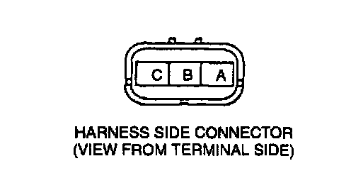
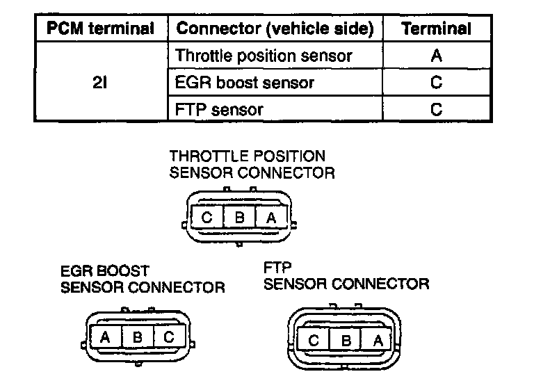
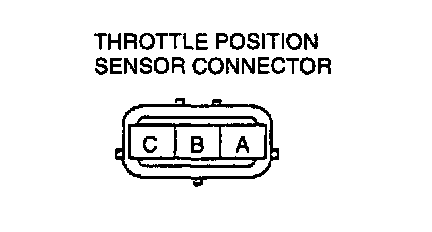
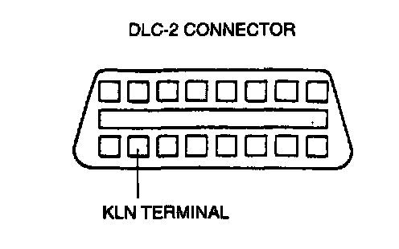

(BARO) Voltage (PID) Inspection
BARO V PID Inspection Procedure1. Confirm the ignition switch is turned on.
2. Confirm that the following PIDs are within the specifications:
BARO: 101.3 kPa (760 mmHg, 29.9 inHg) (Absolute pressure)
IAT: 10-50°C (50-122°F)

3. Disconnect the EGR boost sensor connector and measure the voltage at EGR boost sensor connector terminal C.
Voltage: 4.5-5.5 V
4. Reconnect the connector.
5. Disconnect the vacuum hose from the EGR boost sensor. Connect the vacuum pump to the EGR boost sensor.
6. Select BARO V PID on the NGS tester and press-START.
7. Apply the vacuum and verify that the BARO V is as specified on the table.
Vref Terminal Circuit Inspection
1. Turn the ignition switch to ON.
2. Measure the voltage between the throttle position sensor connector (vehicle side) terminal A and body ground by using a voltmeter.
1. Measurement voltage is 0 V.
1. Turn the ignition switch off.
2. Disconnect the throttle position sensor connector, EGR boost sensor connector, and fuel tank pressure sensor connector (which is applied Vref).
3. Verify there is no continuity between the throttle position sensor connector (vehicle side) terminal A and body ground by using an ohmmeter.
4. If there is continuity, repair the related harness for short to circuit.

5. Inspect continuity between the PCM connector (vehicle side) terminal 21 and each sensor connector (vehicle side) terminals which is applied Vref by using an ohmmeter.
6. If there is continuity, repair the related harnesses.
2. Measurement voltage is B+.
1. Turn the ignition switch off.
2. Disconnect the battery positive harness and battery negative harness.

3. Verify there is no continuity between the throttle position sensor connector (vehicle side) terminal A and battery positive harness by using an ohmmeter.
4. If there is continuity, repair the related harnesses for short to B+ circuit.
3. Measurement voltage is approx. 5 V.
- Vref terminal of PCM is okay.
Ground Circuit Inspection
1. Turn the ignition switch off.
2. Disconnect the PCM connectors.
3. Inspect for continuity between the PCM ground terminals and body ground by using an ohmmeter.
4. If not as specified, repair the related harnesses for open circuit.
Power Supply Circuit Inspection
1. Turn the ignition switch off.
2. Disconnect the PCM connectors.
3. Measure the voltage between the PCM battery power terminal connectors and body ground by using a voltmeter.
Power 8upply terminal voltage B+
4. If not as specified, repair the related harnesses and fuses.
Serial Communication Terminal Inspection
1. Turn the ignition switch off.
2. Disconnect PCM connectors.

3. Verify there is continuity between PCM connector terminal 1D and DLC-2 KLN terminal.
4. If not as specified, repair the related harnesses.